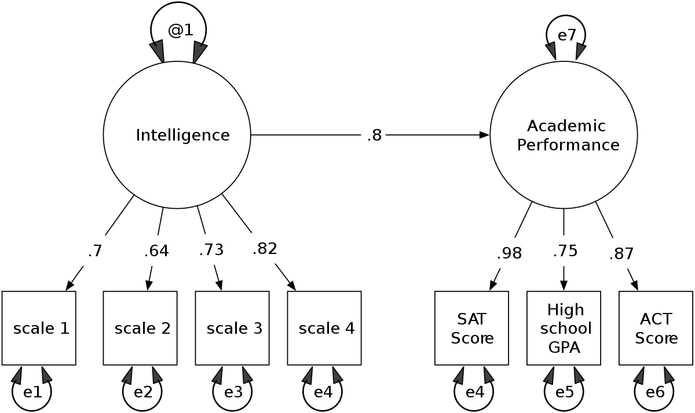
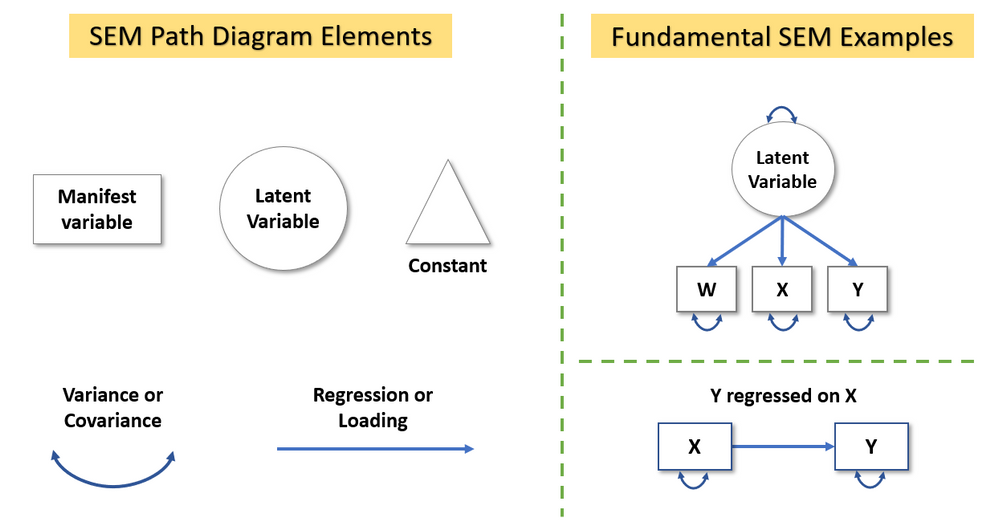
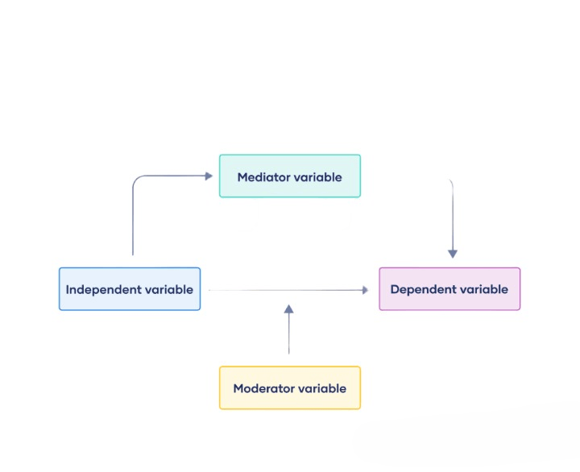
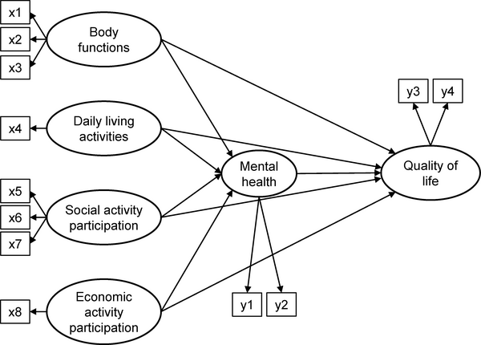

Introduction to Structural Equation Modeling (SEM)
Introduction to Structural Equation Modeling (SEM)

Structural Equation Modeling (SEM) is a comprehensive statistical approach used to model complex relationships among variables. In other words, SEM integrates various techniques into a singular model structure. On this page, we will cover the fundamentals of SEM, including how to build, analyze, and interpret SEM models accurately.
Definition and Purpose of SEM
- Definition: SEM is a multivariate statistical technique for analyzing complex relationships between observed and latent variables.
- Integrative of Various Disciplines: Psychology, epidemiology, statistics, and econometrics. Our fields’ theoretical, qualitative, quantitative, and clinical foci make SEM application to nursing science broad.
- Purpose: To test theoretical models that specify relationships among multiple variables, including direct and indirect effects. Employs multivariate techniques to fit a modeling framework.
Research Application, Key Concepts, and Theoretical Foundations
- Types of Research Applications for SEM:
- Assessing Complex and Multi-factorial Relationships: Research with difficulty measuring relationships, including errors that may need correction. An example might include clinical support. Support is difficult to measure and can include variations in how support is defined and measured, thus producing error.
- Evaluating Systems of Relationships: Rather than the association of X on Y, such as the association of HTN with CVD, we can use SEM to look at multiple variables as potential outcomes and predictors. An example might include Age, BMI, and county of residence on HTN and CVD. We can also look at how HTN and CVD impact BMI, etc. There are multiple systemic possibilities for using SEM to explore the relationships.
- Identifying Factor Mediation: How does a third factor, Z, mediate the association between X and Y? An example here might include how factor Z (e.g., job resources) mediates the relationship between X (e.g., job demands) and Y (e.g., educator depression).
- Key Concepts:
- Observed Variables: Variables that are measured directly.
- Latent Variables: Variables that are not directly observed but inferred from observed variables.
- Path Diagrams: Graphical representations of the hypothesized relationships among variables.
- Theoretical Foundations:
- SEM integrates factor analysis and multiple regression analysis.
- Based on the theory-driven approach to model specification and hypothesis testing.
Understanding the Basic Components of Path Models
- Components:
- Exogenous Variables: Independent variables that are not influenced by other variables in the model.
- Endogenous Variables: Dependent variables that are influenced by other variables in the model.
- Paths: Arrows in path diagrams representing hypothesized relationships.
- Path Models: Illustrate the relationships among variables using arrows and lines.
Path Diagrams

Basic Elements
- Observed Variables (Manifest Variables):
- Represented by rectangles or squares.
- These are directly measured variables in the study (e.g., survey items, test scores).
- Latent Variables:
- Represented by circles or ovals.
- These are unobserved constructs inferred from observed variables (e.g., intelligence, satisfaction).
- Error Terms:
- Represented by small circles or ovals, often with an arrow pointing to the observed variable.
- These represent measurement error or unexplained variance in the observed variables.
Paths and Relationships
- Direct Paths:
- Represented by single-headed arrows.
- Indicate a directional relationship between two variables (e.g., the effect of one variable on another).
- Bidirectional Paths:
- Represented by double-headed arrows.
- Indicate a correlational relationship between two variables, without specifying directionality.
- Latent Variable Indicators:
- Observed variables that load onto a latent variable.
- Represented by single-headed arrows pointing from the latent variable (circle/ovals) to the observed variables (squares/rectangles).
Path vs SEM Analysis: Key Differences
Complexity
- Path Analysis: Simpler, involving only observed variables and focusing on direct and indirect effects (mediation/moderation).
- SEM: More complex, incorporating both observed and latent variables and allowing for the modeling of measurement errors.
Model Components
- Path Analysis: Typically does not include latent variables or measurement errors. Observed variables only.
- SEM: Includes latent variables, measurement models, and can model measurement errors. Both unobserved and observed variables can be used.
Flexibility
- Path Analysis: Limited to simpler models with observed variables.
- SEM: More flexible, capable of modeling complex relationships and structures among both observed and latent variables.
Assumptions
- Path Analysis: Assumes no measurement error in the observed variables.
- SEM: Can explicitly model measurement error, providing more accurate estimates of relationships.
Estimation Methods and Model Identification
- Estimation Methods:
- Maximum Likelihood (ML): The most common method for estimating parameters in SEM.
- Generalized Least Squares (GLS): Another estimation method that is less sensitive to non-normality.
- Model Identification:
- A model must be identified (i.e., have a unique solution) to be estimated.
- Degrees of Freedom: The difference between the number of observed data points and the number of estimated parameters.
- If a model has more parameters (p) than observed data points (N) then the model will not be identifiable. Also, it can lead to a problem known as overfitting, where the model becomes too complex and fits the noise in the data rather than the underlying trend. Colinearity may also be a problem.
Latent Variables and Indicators
- Latent Variables: Variables that represent underlying constructs not directly observed.
- Indicators: Observed variables that are used to measure latent variables.
Confirmatory Factor Analysis (CFA)
- CFA: A technique used to test the measurement model, ensuring that the indicators accurately measure the latent constructs.
- Steps in CFA:
- Specify the measurement model.
- Estimate the model parameters.
- Assess the model fit.
Formulating and Testing Structural Hypotheses
- Formulating Hypotheses: Develop hypotheses based on theory, specifying the expected relationships among variables.
- Testing Hypotheses: Use SEM to test the specified relationships and assess the overall model fit.
Path Coefficients and Model Fit
- Path Coefficients: Represent the strength and direction of relationships between variables.
- Model Fit: Indicates how well the model fits the observed data.
Goodness-of-Fit Measures
- Common Fit Indices:
- Chi-Square: Assesses the discrepancy between the observed and model-implied covariance matrices.
- RMSEA (Root Mean Square Error of Approximation): Measures the goodness of fit per degree of freedom.
- CFI (Comparative Fit Index): Compares the fit of the target model to an independent baseline model.
- TLI (Tucker-Lewis Index): Similar to CFI, but penalizes model complexity.
Interpreting Fit Indices and Assessing Model Adequacy
- Interpreting Fit Indices:
- Chi-Square: A non-significant value indicates a good fit.
- RMSEA: Values less than 0.06 indicate a good fit.
- CFI and TLI: Values greater than 0.95 indicate a good fit.
- Assessing Model Adequacy: Evaluate multiple fit indices to determine the overall model adequacy.
Mediation and Moderation Analysis

- Mediation: Explores whether the effect of an independent variable on a dependent variable is mediated by another variable. See Mediation Analysis or (Baron & Kenny 1986, Holmbeck 1997, Kraemer et al. 2001).
- Moderation: Examines whether the relationship between two variables changes at different levels of a third variable. Moderation Analysis
Examples of SEM in Nursing Research

Example 1: SEM to Predict Patient Outcomes
- Scenario: Using SEM to model the relationships between patient characteristics, treatment variables, and health outcomes.
Example 2: Mediation Analysis in Nursing Research
- Scenario: Exploring whether patient satisfaction mediates the relationship between nurse communication and patient recovery.
Software Examples
Building and Analyzing SEM Models in JMP
You can use the worland5.csv as an example. This hypothetical dataset examines the effects of student background on academic achievement. It contains 9 observed variables (Motivation, Harmony, Stability, Negative Parental Psychology, SES, Verbal IQ, Reading, Arithmetic and Spelling) and 3 hypothesized latent constructs (Adjustment, Risk, Achievement).
JMP Instructions:
-
Go to
Analyze>Multivariate Methods>Structural Equation Modeling. - Select your variables and specify the model structure in the diagram window.
-
Use the
Add Pathtool to draw paths between variables as hypothesized in your model. - Specify latent variables by selecting observed variables and defining them as indicators.
-
Click
Runto estimate the model. - Review the output for path coefficients, model fit indices, and other diagnostics.
Building and Analyzing SEM Models in R
R Code Example:
-
# Load necessary libraries library(lavaan) mydata2<-read.csv("worland5.csv") # adjust the file path accordingly # Specify the SEM model model <- ' # Measurement model adjustment =~ motiv + harm + stabi risk =~ verbal + ppsych + ses achievement =~ read + arith + spell # Structural model achievement ~ adjustment+ risk ' # Fit the model MySEM_model <- sem(model, data=mydata2) # Summarize the results summary(MySEM_model, fit.measures = TRUE) # visualize the SEM model library(semPlot) # Visualize the path diagram semPaths(MySEM_model, what = "std", edge.label.cex = 0.8, layout = "tree")